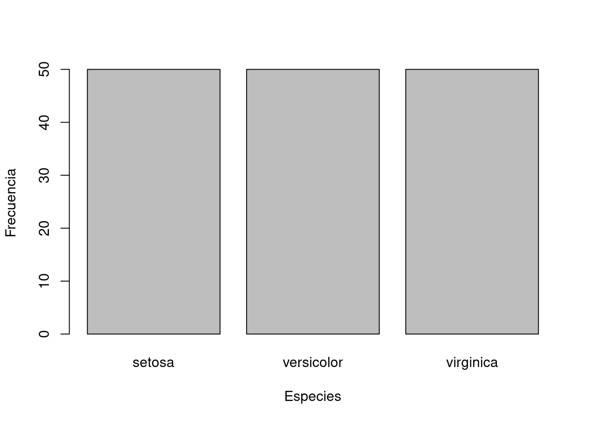

Chapter 3 Base de datos
3.1 Ejercicio 1
EJEMPLO
data(iris)
help(iris)
names(iris) <- tolower(names(iris)) #Esta función es para transformar en minúsculas.## [1] "sepal.length" "sepal.width" "petal.length" "petal.width" "species"## [1] 150 5## sepal.length sepal.width petal.length petal.width species
## 1 5.1 3.5 1.4 0.2 setosa
## 2 4.9 3.0 1.4 0.2 setosa
## 3 4.7 3.2 1.3 0.2 setosa
## 4 4.6 3.1 1.5 0.2 setosa
## 5 5.0 3.6 1.4 0.2 setosa
## 6 5.4 3.9 1.7 0.4 setosa## sepal.length sepal.width petal.length petal.width species
## 145 6.7 3.3 5.7 2.5 virginica
## 146 6.7 3.0 5.2 2.3 virginica
## 147 6.3 2.5 5.0 1.9 virginica
## 148 6.5 3.0 5.2 2.0 virginica
## 149 6.2 3.4 5.4 2.3 virginica
## 150 5.9 3.0 5.1 1.8 virginica## [1] "sepal.length" "sepal.width" "petal.length" "petal.width" "species"## [1] 150 5## sepal.length sepal.width petal.length petal.width species
## 1 5.1 3.5 1.4 0.2 setosa
## 2 4.9 3.0 1.4 0.2 setosa
## 3 4.7 3.2 1.3 0.2 setosa
## 4 4.6 3.1 1.5 0.2 setosa
## 5 5.0 3.6 1.4 0.2 setosa
## 6 5.4 3.9 1.7 0.4 setosa## sepal.length sepal.width petal.length petal.width species
## 145 6.7 3.3 5.7 2.5 virginica
## 146 6.7 3.0 5.2 2.3 virginica
## 147 6.3 2.5 5.0 1.9 virginica
## 148 6.5 3.0 5.2 2.0 virginica
## 149 6.2 3.4 5.4 2.3 virginica
## 150 5.9 3.0 5.1 1.8 virginica## [1] "sepal.length" "sepal.width" "petal.length" "petal.width" "species"## [1] 150 5## # A tibble: 6 × 5
## sepal.length sepal.width petal.length petal.width species
## <dbl> <dbl> <dbl> <dbl> <chr>
## 1 5.1 3.5 1.4 0.2 setosa
## 2 4.9 3 1.4 0.2 setosa
## 3 4.7 3.2 1.3 0.2 setosa
## 4 4.6 3.1 1.5 0.2 setosa
## 5 5 3.6 1.4 0.2 setosa
## 6 5.4 3.9 1.7 0.4 setosa## # A tibble: 6 × 5
## sepal.length sepal.width petal.length petal.width species
## <dbl> <dbl> <dbl> <dbl> <chr>
## 1 6.7 3.3 5.7 2.5 virginica
## 2 6.7 3 5.2 2.3 virginica
## 3 6.3 2.5 5 1.9 virginica
## 4 6.5 3 5.2 2 virginica
## 5 6.2 3.4 5.4 2.3 virginica
## 6 5.9 3 5.1 1.8 virginicaTambién se pueden visualizar variables específicas directamente o mediante indexación:
## [1] 5.1 4.9 4.7 4.6 5.0 5.4 4.6 5.0 4.4 4.9 5.4 4.8 4.8 4.3 5.8 5.7 5.4 5.1 5.7 5.1 5.4 5.1 4.6 5.1 4.8 5.0
## [27] 5.0 5.2 5.2 4.7 4.8 5.4 5.2 5.5 4.9 5.0 5.5 4.9 4.4 5.1 5.0 4.5 4.4 5.0 5.1 4.8 5.1 4.6 5.3 5.0 7.0 6.4
## [53] 6.9 5.5 6.5 5.7 6.3 4.9 6.6 5.2 5.0 5.9 6.0 6.1 5.6 6.7 5.6 5.8 6.2 5.6 5.9 6.1 6.3 6.1 6.4 6.6 6.8 6.7
## [79] 6.0 5.7 5.5 5.5 5.8 6.0 5.4 6.0 6.7 6.3 5.6 5.5 5.5 6.1 5.8 5.0 5.6 5.7 5.7 6.2 5.1 5.7 6.3 5.8 7.1 6.3
## [105] 6.5 7.6 4.9 7.3 6.7 7.2 6.5 6.4 6.8 5.7 5.8 6.4 6.5 7.7 7.7 6.0 6.9 5.6 7.7 6.3 6.7 7.2 6.2 6.1 6.4 7.2
## [131] 7.4 7.9 6.4 6.3 6.1 7.7 6.3 6.4 6.0 6.9 6.7 6.9 5.8 6.8 6.7 6.7 6.3 6.5 6.2 5.9## [1] 3.5 3.0 3.2 3.1 3.6 3.9 3.4 3.4 2.9 3.1 3.7 3.4 3.0 3.0 4.0 4.4 3.9 3.5 3.8 3.8 3.4 3.7 3.6 3.3 3.4 3.0
## [27] 3.4 3.5 3.4 3.2 3.1 3.4 4.1 4.2 3.1 3.2 3.5 3.6 3.0 3.4 3.5 2.3 3.2 3.5 3.8 3.0 3.8 3.2 3.7 3.3 3.2 3.2
## [53] 3.1 2.3 2.8 2.8 3.3 2.4 2.9 2.7 2.0 3.0 2.2 2.9 2.9 3.1 3.0 2.7 2.2 2.5 3.2 2.8 2.5 2.8 2.9 3.0 2.8 3.0
## [79] 2.9 2.6 2.4 2.4 2.7 2.7 3.0 3.4 3.1 2.3 3.0 2.5 2.6 3.0 2.6 2.3 2.7 3.0 2.9 2.9 2.5 2.8 3.3 2.7 3.0 2.9
## [105] 3.0 3.0 2.5 2.9 2.5 3.6 3.2 2.7 3.0 2.5 2.8 3.2 3.0 3.8 2.6 2.2 3.2 2.8 2.8 2.7 3.3 3.2 2.8 3.0 2.8 3.0
## [131] 2.8 3.8 2.8 2.8 2.6 3.0 3.4 3.1 3.0 3.1 3.1 3.1 2.7 3.2 3.3 3.0 2.5 3.0 3.4 3.0## # A tibble: 150 × 1
## sepal.length
## <dbl>
## 1 5.1
## 2 4.9
## 3 4.7
## 4 4.6
## 5 5
## 6 5.4
## 7 4.6
## 8 5
## 9 4.4
## 10 4.9
## # ℹ 140 more rows## # A tibble: 1 × 1
## sepal.length
## <dbl>
## 1 5.1## # A tibble: 150 × 1
## sepal.width
## <dbl>
## 1 3.5
## 2 3
## 3 3.2
## 4 3.1
## 5 3.6
## 6 3.9
## 7 3.4
## 8 3.4
## 9 2.9
## 10 3.1
## # ℹ 140 more rowsEstructura de la base de datos incluyendo la tipología de las variables.
## tibble [150 × 5] (S3: tbl_df/tbl/data.frame)
## $ sepal.length: num [1:150] 5.1 4.9 4.7 4.6 5 5.4 4.6 5 4.4 4.9 ...
## $ sepal.width : num [1:150] 3.5 3 3.2 3.1 3.6 3.9 3.4 3.4 2.9 3.1 ...
## $ petal.length: num [1:150] 1.4 1.4 1.3 1.5 1.4 1.7 1.4 1.5 1.4 1.5 ...
## $ petal.width : num [1:150] 0.2 0.2 0.2 0.2 0.2 0.4 0.3 0.2 0.2 0.1 ...
## $ species : chr [1:150] "setosa" "setosa" "setosa" "setosa" ...Renombrar variables
names(irisxlsx)[names(irisxlsx) == "sepal.length"] <- "longitud_sepetalos"
names(irisxlsx)[names(irisxlsx) == "sepal.width"] <- "anchura_sepetalos"
names(irisxlsx)[names(irisxlsx) == "petal.length"] <- "longitud_petalos"
names(irisxlsx)[names(irisxlsx) == "petal.width"] <- "anchura_petalos"
names(irisxlsx)[names(irisxlsx) == "species"] <- "especies"
names(irisxlsx)## [1] "longitud_sepetalos" "anchura_sepetalos" "longitud_petalos" "anchura_petalos" "especies"Añadir etiquetas de valor.
attr(irisxlsx$longitud_sepetalos, "label") <- "Longitud de los sépalos in cm"
irisxlsx$longitud_sepetalos## [1] 5.1 4.9 4.7 4.6 5.0 5.4 4.6 5.0 4.4 4.9 5.4 4.8 4.8 4.3 5.8 5.7 5.4 5.1 5.7 5.1 5.4 5.1 4.6 5.1 4.8 5.0
## [27] 5.0 5.2 5.2 4.7 4.8 5.4 5.2 5.5 4.9 5.0 5.5 4.9 4.4 5.1 5.0 4.5 4.4 5.0 5.1 4.8 5.1 4.6 5.3 5.0 7.0 6.4
## [53] 6.9 5.5 6.5 5.7 6.3 4.9 6.6 5.2 5.0 5.9 6.0 6.1 5.6 6.7 5.6 5.8 6.2 5.6 5.9 6.1 6.3 6.1 6.4 6.6 6.8 6.7
## [79] 6.0 5.7 5.5 5.5 5.8 6.0 5.4 6.0 6.7 6.3 5.6 5.5 5.5 6.1 5.8 5.0 5.6 5.7 5.7 6.2 5.1 5.7 6.3 5.8 7.1 6.3
## [105] 6.5 7.6 4.9 7.3 6.7 7.2 6.5 6.4 6.8 5.7 5.8 6.4 6.5 7.7 7.7 6.0 6.9 5.6 7.7 6.3 6.7 7.2 6.2 6.1 6.4 7.2
## [131] 7.4 7.9 6.4 6.3 6.1 7.7 6.3 6.4 6.0 6.9 6.7 6.9 5.8 6.8 6.7 6.7 6.3 6.5 6.2 5.9
## attr(,"label")
## [1] "Longitud de los sépalos in cm"attr(irisxlsx$anchura_sepetalos, "label") <- "Anchura de los sépalos in cm"
irisxlsx$anchura_sepetalos## [1] 3.5 3.0 3.2 3.1 3.6 3.9 3.4 3.4 2.9 3.1 3.7 3.4 3.0 3.0 4.0 4.4 3.9 3.5 3.8 3.8 3.4 3.7 3.6 3.3 3.4 3.0
## [27] 3.4 3.5 3.4 3.2 3.1 3.4 4.1 4.2 3.1 3.2 3.5 3.6 3.0 3.4 3.5 2.3 3.2 3.5 3.8 3.0 3.8 3.2 3.7 3.3 3.2 3.2
## [53] 3.1 2.3 2.8 2.8 3.3 2.4 2.9 2.7 2.0 3.0 2.2 2.9 2.9 3.1 3.0 2.7 2.2 2.5 3.2 2.8 2.5 2.8 2.9 3.0 2.8 3.0
## [79] 2.9 2.6 2.4 2.4 2.7 2.7 3.0 3.4 3.1 2.3 3.0 2.5 2.6 3.0 2.6 2.3 2.7 3.0 2.9 2.9 2.5 2.8 3.3 2.7 3.0 2.9
## [105] 3.0 3.0 2.5 2.9 2.5 3.6 3.2 2.7 3.0 2.5 2.8 3.2 3.0 3.8 2.6 2.2 3.2 2.8 2.8 2.7 3.3 3.2 2.8 3.0 2.8 3.0
## [131] 2.8 3.8 2.8 2.8 2.6 3.0 3.4 3.1 3.0 3.1 3.1 3.1 2.7 3.2 3.3 3.0 2.5 3.0 3.4 3.0
## attr(,"label")
## [1] "Anchura de los sépalos in cm"## [1] 1.4 1.4 1.3 1.5 1.4 1.7 1.4 1.5 1.4 1.5 1.5 1.6 1.4 1.1 1.2 1.5 1.3 1.4 1.7 1.5 1.7 1.5 1.0 1.7 1.9 1.6
## [27] 1.6 1.5 1.4 1.6 1.6 1.5 1.5 1.4 1.5 1.2 1.3 1.4 1.3 1.5 1.3 1.3 1.3 1.6 1.9 1.4 1.6 1.4 1.5 1.4 4.7 4.5
## [53] 4.9 4.0 4.6 4.5 4.7 3.3 4.6 3.9 3.5 4.2 4.0 4.7 3.6 4.4 4.5 4.1 4.5 3.9 4.8 4.0 4.9 4.7 4.3 4.4 4.8 5.0
## [79] 4.5 3.5 3.8 3.7 3.9 5.1 4.5 4.5 4.7 4.4 4.1 4.0 4.4 4.6 4.0 3.3 4.2 4.2 4.2 4.3 3.0 4.1 6.0 5.1 5.9 5.6
## [105] 5.8 6.6 4.5 6.3 5.8 6.1 5.1 5.3 5.5 5.0 5.1 5.3 5.5 6.7 6.9 5.0 5.7 4.9 6.7 4.9 5.7 6.0 4.8 4.9 5.6 5.8
## [131] 6.1 6.4 5.6 5.1 5.6 6.1 5.6 5.5 4.8 5.4 5.6 5.1 5.1 5.9 5.7 5.2 5.0 5.2 5.4 5.1
## attr(,"label")
## [1] "Longitud pétalos in cm"## [1] "setosa" "setosa" "setosa" "setosa" "setosa" "setosa" "setosa" "setosa"
## [9] "setosa" "setosa" "setosa" "setosa" "setosa" "setosa" "setosa" "setosa"
## [17] "setosa" "setosa" "setosa" "setosa" "setosa" "setosa" "setosa" "setosa"
## [25] "setosa" "setosa" "setosa" "setosa" "setosa" "setosa" "setosa" "setosa"
## [33] "setosa" "setosa" "setosa" "setosa" "setosa" "setosa" "setosa" "setosa"
## [41] "setosa" "setosa" "setosa" "setosa" "setosa" "setosa" "setosa" "setosa"
## [49] "setosa" "setosa" "versicolor" "versicolor" "versicolor" "versicolor" "versicolor" "versicolor"
## [57] "versicolor" "versicolor" "versicolor" "versicolor" "versicolor" "versicolor" "versicolor" "versicolor"
## [65] "versicolor" "versicolor" "versicolor" "versicolor" "versicolor" "versicolor" "versicolor" "versicolor"
## [73] "versicolor" "versicolor" "versicolor" "versicolor" "versicolor" "versicolor" "versicolor" "versicolor"
## [81] "versicolor" "versicolor" "versicolor" "versicolor" "versicolor" "versicolor" "versicolor" "versicolor"
## [89] "versicolor" "versicolor" "versicolor" "versicolor" "versicolor" "versicolor" "versicolor" "versicolor"
## [97] "versicolor" "versicolor" "versicolor" "versicolor" "virginica" "virginica" "virginica" "virginica"
## [105] "virginica" "virginica" "virginica" "virginica" "virginica" "virginica" "virginica" "virginica"
## [113] "virginica" "virginica" "virginica" "virginica" "virginica" "virginica" "virginica" "virginica"
## [121] "virginica" "virginica" "virginica" "virginica" "virginica" "virginica" "virginica" "virginica"
## [129] "virginica" "virginica" "virginica" "virginica" "virginica" "virginica" "virginica" "virginica"
## [137] "virginica" "virginica" "virginica" "virginica" "virginica" "virginica" "virginica" "virginica"
## [145] "virginica" "virginica" "virginica" "virginica" "virginica" "virginica"
## attr(,"label")
## [1] "Clase de especie"Selección de sub-bases de datos. En este caso solamente queremos seleccionar la especie virginica y setosa.
## [1] "setosa" "setosa" "setosa" "setosa" "setosa" "setosa" "setosa" "setosa"
## [9] "setosa" "setosa" "setosa" "setosa" "setosa" "setosa" "setosa" "setosa"
## [17] "setosa" "setosa" "setosa" "setosa" "setosa" "setosa" "setosa" "setosa"
## [25] "setosa" "setosa" "setosa" "setosa" "setosa" "setosa" "setosa" "setosa"
## [33] "setosa" "setosa" "setosa" "setosa" "setosa" "setosa" "setosa" "setosa"
## [41] "setosa" "setosa" "setosa" "setosa" "setosa" "setosa" "setosa" "setosa"
## [49] "setosa" "setosa" "versicolor" "versicolor" "versicolor" "versicolor" "versicolor" "versicolor"
## [57] "versicolor" "versicolor" "versicolor" "versicolor" "versicolor" "versicolor" "versicolor" "versicolor"
## [65] "versicolor" "versicolor" "versicolor" "versicolor" "versicolor" "versicolor" "versicolor" "versicolor"
## [73] "versicolor" "versicolor" "versicolor" "versicolor" "versicolor" "versicolor" "versicolor" "versicolor"
## [81] "versicolor" "versicolor" "versicolor" "versicolor" "versicolor" "versicolor" "versicolor" "versicolor"
## [89] "versicolor" "versicolor" "versicolor" "versicolor" "versicolor" "versicolor" "versicolor" "versicolor"
## [97] "versicolor" "versicolor" "versicolor" "versicolor" "virginica" "virginica" "virginica" "virginica"
## [105] "virginica" "virginica" "virginica" "virginica" "virginica" "virginica" "virginica" "virginica"
## [113] "virginica" "virginica" "virginica" "virginica" "virginica" "virginica" "virginica" "virginica"
## [121] "virginica" "virginica" "virginica" "virginica" "virginica" "virginica" "virginica" "virginica"
## [129] "virginica" "virginica" "virginica" "virginica" "virginica" "virginica" "virginica" "virginica"
## [137] "virginica" "virginica" "virginica" "virginica" "virginica" "virginica" "virginica" "virginica"
## [145] "virginica" "virginica" "virginica" "virginica" "virginica" "virginica"
## attr(,"label")
## [1] "Clase de especie"## [1] "setosa" "setosa" "setosa" "setosa" "setosa" "setosa" "setosa" "setosa"
## [9] "setosa" "setosa" "setosa" "setosa" "setosa" "setosa" "setosa" "setosa"
## [17] "setosa" "setosa" "setosa" "setosa" "setosa" "setosa" "setosa" "setosa"
## [25] "setosa" "setosa" "setosa" "setosa" "setosa" "setosa" "setosa" "setosa"
## [33] "setosa" "setosa" "setosa" "setosa" "setosa" "setosa" "setosa" "setosa"
## [41] "setosa" "setosa" "setosa" "setosa" "setosa" "setosa" "setosa" "setosa"
## [49] "setosa" "setosa" "virginica" "virginica" "virginica" "virginica" "virginica" "virginica"
## [57] "virginica" "virginica" "virginica" "virginica" "virginica" "virginica" "virginica" "virginica"
## [65] "virginica" "virginica" "virginica" "virginica" "virginica" "virginica" "virginica" "virginica"
## [73] "virginica" "virginica" "virginica" "virginica" "virginica" "virginica" "virginica" "virginica"
## [81] "virginica" "virginica" "virginica" "virginica" "virginica" "virginica" "virginica" "virginica"
## [89] "virginica" "virginica" "virginica" "virginica" "virginica" "virginica" "virginica" "virginica"
## [97] "virginica" "virginica" "virginica" "virginica"
## attr(,"label")
## [1] "Clase de especie"Establecer niveles
## Min. 1st Qu. Median Mean 3rd Qu. Max.
## 4.300 5.100 5.800 5.843 6.400 7.900irisxlsx$longitud_sepetalos_ct <- ifelse(irisxlsx$longitud_sepetalos<=5.10, "1Q",
ifelse(irisxlsx$longitud_sepetalos>5.10 & irisxlsx$longitud_sepetalos<=5.80, "2Q",
ifelse(irisxlsx$longitud_sepetalos>5.80 & irisxlsx$longitud_sepetalos<=6.40, "3Q", "Q4")))
iris_sepaloslargos <- irisxlsx %>% filter(longitud_sepetalos_ct=="Q4")
summary(iris_sepaloslargos$longitud_sepetalos)## Min. 1st Qu. Median Mean 3rd Qu. Max.
## 6.500 6.700 6.800 6.971 7.200 7.900Nueva variables que sea la razón entre las longitudes de sépalos y pétalos.
Análisis descriptivo - Variables categóricas
##
## setosa versicolor virginica
## 50 50 50##
## setosa versicolor virginica
## 0.3333333 0.3333333 0.3333333##
## setosa versicolor virginica
## 33.3 33.3 33.3Gráfico de barras

Gráfico de sectores

Media
## [1] 5.843333## $longitud_sepetalos
## [1] "numeric"
##
## $anchura_sepetalos
## [1] "numeric"
##
## $longitud_petalos
## [1] "numeric"
##
## $anchura_petalos
## [1] "numeric"
##
## $especies
## [1] "character"
##
## $longitud_sepetalos_ct
## [1] "character"## $longitud_sepetalos
## [1] 5.843333
##
## $anchura_sepetalos
## [1] 3.057333
##
## $longitud_petalos
## [1] 3.758
##
## $anchura_petalos
## [1] 1.199333## setosa versicolor virginica
## 1.462 4.260 5.552Mediana
## [1] 5.8Moda
# Creación de una función
getmode <- function(v) {
uniqv <- unique(v)
uniqv[which.max(tabulate(match(v, uniqv)))]
}
getmode(irisxlsx$longitud_sepetalos)## [1] 5Varianza
Desviación estándar
## [1] 0.8280661coeficiente de variación
CV = σ / μ
σ: Desviación estandar μ: Media
sd_cal <- sd(irisxlsx$longitud_sepetalos)
media_cal <- mean(irisxlsx$longitud_sepetalos)
CV <- sd_cal/media_cal*100
CV## [1] 14.17113#Ejemplo de función para calcular el coeficiente de variación
coefficient_of_variation <- function(x) {
if (length(x) <= 1) {
stop("Input vector must have more than one element.")
}
sd_value <- sd(x)
mean_value <- mean(x)
cv <- (sd_value / mean_value) * 100
return(cv)
}
coefficient_of_variation(irisxlsx$longitud_sepetalos)## [1] 14.17113Error estandard de la media
## [1] 0.06761132Percentiles
## 40%
## 3.9## 25% 50% 75%
## 1.60 4.35 5.10## Min. 1st Qu. Median Mean 3rd Qu. Max.
## 1.000 1.600 4.350 3.758 5.100 6.900Asimetría
## [1] 0.3117531Curtosis
## [1] 2.426432Histograma
## longitud_sepetalos anchura_sepetalos longitud_petalos anchura_petalos especies
## Min. :4.300 Min. :2.000 Min. :1.000 Min. :0.100 Length:150
## 1st Qu.:5.100 1st Qu.:2.800 1st Qu.:1.600 1st Qu.:0.300 Class :character
## Median :5.800 Median :3.000 Median :4.350 Median :1.300 Mode :character
## Mean :5.843 Mean :3.057 Mean :3.758 Mean :1.199
## 3rd Qu.:6.400 3rd Qu.:3.300 3rd Qu.:5.100 3rd Qu.:1.800
## Max. :7.900 Max. :4.400 Max. :6.900 Max. :2.500
## longitud_sepetalos_ct
## Length:150
## Class :character
## Mode :character
##
##
## 

Densidad
den <- density(irisxlsx$longitud_sepetalos)
plot(den, frame = FALSE, col = "blue",main = "Density plot")Ordenar datos
## # A tibble: 150 × 6
## longitud_sepetalos anchura_sepetalos longitud_petalos anchura_petalos especies longitud_sepetalos_ct
## <dbl> <dbl> <dbl> <dbl> <chr> <chr>
## 1 4.3 3 1.1 0.1 setosa 1Q
## 2 4.4 2.9 1.4 0.2 setosa 1Q
## 3 4.4 3 1.3 0.2 setosa 1Q
## 4 4.4 3.2 1.3 0.2 setosa 1Q
## 5 4.5 2.3 1.3 0.3 setosa 1Q
## 6 4.6 3.1 1.5 0.2 setosa 1Q
## 7 4.6 3.4 1.4 0.3 setosa 1Q
## 8 4.6 3.6 1 0.2 setosa 1Q
## 9 4.6 3.2 1.4 0.2 setosa 1Q
## 10 4.7 3.2 1.3 0.2 setosa 1Q
## # ℹ 140 more rows## # A tibble: 150 × 6
## longitud_sepetalos anchura_sepetalos longitud_petalos anchura_petalos especies longitud_sepetalos_ct
## <dbl> <dbl> <dbl> <dbl> <chr> <chr>
## 1 7.9 3.8 6.4 2 virginica Q4
## 2 7.7 3.8 6.7 2.2 virginica Q4
## 3 7.7 2.6 6.9 2.3 virginica Q4
## 4 7.7 2.8 6.7 2 virginica Q4
## 5 7.7 3 6.1 2.3 virginica Q4
## 6 7.6 3 6.6 2.1 virginica Q4
## 7 7.4 2.8 6.1 1.9 virginica Q4
## 8 7.3 2.9 6.3 1.8 virginica Q4
## 9 7.2 3.6 6.1 2.5 virginica Q4
## 10 7.2 3.2 6 1.8 virginica Q4
## # ℹ 140 more rowsEliminar casos perdidos
## [1] 150 6##
## FALSE
## 900irisxlsx_NAs <- read_excel("irisxlsx_NAs.xlsx" , sheet="data", col_names= TRUE)
table(is.na(irisxlsx_NAs))##
## FALSE TRUE
## 742 8## [1] 142 53.2 Ejercicio 2
REALIZAR
Utilizando la base de datos “carsxlsx.xlsx” conesta a la siguientes preguntas.
¿Cuantas variables tiene la base de datos “carsxlsx”, cuales son y qué tipo?
¿Qué dimensiones tiene la base de datos “carsxlsx”? Muestra los primeros y últimos valores de la base de datos.
Cambia el nombre de las dos variables a “Velocidad” y “Distancia
Añade etiquetas de valor a cada una de las variables
Calcula el valor mínimo, primer cuartil, mediana, segundo cuartil y máximo para cada una de las variables
Selecciona los coches que tengan una velocidad superior a 14 mph
Genera una variable nueva que distribuya las velocidades en cuatro grupos llamada Velocidad_Q
Cuantos coches hay en cada grupo y qué porcentaje representan
Dibuja un diagrama de barras de la variable “Velocidad_Q
Calcula el valor mínimo, primer cuartil, mediana, segundo cuartil y máximo para cada grupo identificado en “Velocidad_Q”
Son las variables “Velocidad” y “Distancia” simétricas
¿Hay valores perdidos en la base de datos “carsxlsx”?
Sabiendo que 1 mph es igual a 1.60934 km/h, transforma la variable “Velocidad” en km/h
(Team, 2023)